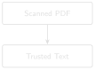

# code/chapter_06/ocr_quality_gate.py
import re
def evaluate_ocr_quality(text: str, min_chars: int = 200,
min_alpha_words: int = 30,
max_symbol_ratio: float = 0.35,
reject_min_flags: int = 2) -> dict:
alpha_tokens = re.findall(r"[A-Za-z]+", text)
non_ws = [c for c in text if not c.isspace()]
noisy = sum(1 for c in non_ws if not c.isalnum() and c not in set("%.,()/-:'"))
symbol_ratio = noisy / max(len(non_ws), 1)
flags = {
"low_text_density": len(text) < min_chars or len(alpha_tokens) < min_alpha_words,
"high_symbol_ratio": symbol_ratio > max_symbol_ratio,
}
active = [k for k, v in flags.items() if v]
return {"reject_ocr": len(active) >= reject_min_flags, "flags": flags}6 Scanned Reports and OCR Quality Gates

Progress ██████░░░░░░░ 6 / 13 · Estimated time: 45–60 min · Difficulty: 🟠 Intermediate
6.1 Learning objectives
By the end of this chapter, you will be able to:
- Recognise when a DDR PDF has no extractable text and needs OCR.
- Make a scanned-style page from a digital report, recover its text with OCR, and score whether that text is trustworthy enough to index.
- Build a quality gate that rejects bad OCR output before it enters your search index, rather than trying to fix it after the fact.
6.2 Operational Problem
Sean, the production engineer, asks a question that matters long before any answer gets generated: “Can you trust the text this archive extracted — even from a report that was scanned instead of born digital?” Every one of the 76 Utah FORGE reports used in this book is digital-native — extracting all 76 with Chapter 1’s own extract_text() confirms zero unparsed PDFs. (The companion pipeline’s QA/QC pass reports the same result across 227 source files — the larger, pre-deduplication count from the raw public archive before Chapter 8’s build_full_archive.py collapsed it down to 76; that raw archive isn’t part of this book’s repository, so the 227-file figure isn’t independently checkable here.) You got lucky: WellEz, the software that generated these reports, embeds real character data on every page. Not every archive is this well-behaved. Faxed reports, reports scanned from paper files, and photos of a logbook page all produce PDFs with no character data at all — just a picture of text. Chapter 1’s extract_text() handled this gracefully (an empty string, not a crash), but a real, larger archive needs more than graceful failure: it needs OCR to recover the text, and a way to know whether to trust what OCR gives back.
6.3 Example DDR extract
NoteOCR output before and after quality gating
Clean digital extraction (this is what every Utah FORGE report gives):
"During the slide lost tool face and became assembly became stuck"
Degraded OCR output from a hypothetical poor scan of the same line:
"Dur1ng the s1ide los+ t00l face and became assembIy became stu(k"The second block is exactly the kind of text a naive pipeline would embed and index without complaint — and exactly the kind of text a quality gate should catch and route to a review queue instead. That degraded line is illustrative; further down, “Seeing it on a real scanned page” makes an actual scanned page from report #38 and runs the whole extract-fails → OCR → gate round-trip on it, no hypotheticals.
6.4 Theory
TipEngineering Translation: OCR
OCR (Optical Character Recognition) is software that looks at a picture of text — a scanned page, a photo of a logbook — and reads the letters and numbers off it, the same way a person would, turning that picture into text a computer can search. It’s the step that recovers text from exactly the kind of PDF Chapter 1’s extract_text() returns nothing for.
Getting OCR to run is the easy part — pytesseract, cloud OCR APIs, and PDF-rendering libraries all do a competent job of turning a page image into text. The hard part, and the one that actually determines whether your downstream system is trustworthy, is deciding whether to trust the output at all. A quality gate scores OCR text against a handful of cheap heuristics — quick rule-of-thumb checks: is there enough text, is the alphabetic-to-symbol ratio sane, is there suspicious repeated garbage — and rejects anything that fails, routing it to manual review instead of silently indexing noise.
TipEngineering Translation: Quality gate
A quality gate is a mud check before you commit to pumping downhole: a handful of cheap tests run before you trust what comes next. Passing doesn’t prove the text is perfect, the same way a good mud check doesn’t prove there’s no problem downhole — it just screens out the obviously bad cases before they cost you.
TipEngineering Translation: Flag
A flag here is one checkbox on an inspection form — “too little text” either applies or it doesn’t. One flag firing on its own usually isn’t grounds for rejection (a short, sparse-but-real report can trip one check honestly); it’s when several flags fire together that the page is actually suspect.
This chapter’s companion pipeline, DDR_UTAH_FORGE, implements exactly this pattern in src/rag_pdf/ocr_quality.py — even though, as noted above, this particular archive never needs to exercise it. That’s by design: the quality gate runs unconditionally on every extracted page, digital or scanned, as a defensive check. Its evaluate_ocr_quality() function checks four independent flags — low_text_density, high_symbol_ratio, repeated_garbage, low_line_count — and rejects a page only once two or more flags fire, so no single noisy-but-legitimate page (e.g. a short report with a lot of numeric data) gets discarded on one false positive.
extracted text
↓
compute four flags
(low_text_density, high_symbol_ratio,
repeated_garbage, low_line_count)
↓
count how many are True
↓
2 or more active?
↓
yes -> reject, flag for review
no -> accept into index6.5 Implementation
6.5.1 Step 1: build a quality-gate function
Build a simplified version of the same idea.
What problem are we solving?
Decide whether a page’s extracted text is trustworthy enough to add to the search index, or whether it should be set aside for a human to check instead.
Inputs
- Extracted text (from OCR, or from Chapter 1’s digital extraction).
- Thresholds: minimum characters, minimum alphabetic words, maximum symbol ratio, and how many flags must fire before rejecting.
Expected Output
A dictionary reporting the decision and which specific checks failed, for example:
{"reject_ocr": True, "flags": {"low_text_density": True, "high_symbol_ratio": True}}What just happened?
This measures two things about the text: how much of it is real, readable words (low_text_density), and how much of it is odd symbols that shouldn’t be there (high_symbol_ratio). Each check is a simple yes/no. Only when two or more of those checks say “yes, this looks wrong” does the function recommend rejecting the page — a single unusual character never sinks an otherwise legitimate report.
Test it against a real Utah FORGE report’s clean text (it should pass easily — that text has a healthy word count and almost no noise symbols) and against the corrupted example above (it should fail on both flags).
The full production version — including the repeated-garbage detector and line-count check — is in the companion repository at src/rag_pdf/ocr_quality.py, alongside src/rag_pdf/rotation_handler.py for detecting and correcting upside-down or sideways scans, and src/rag_pdf/table_ocr_handoff.py for the case where a table (not narrative text) needs OCR fallback.
6.5.2 Step 2: see it on a real scanned page
The gate scores text — but where does bad OCR text actually come from? This archive is entirely digital, so to see the whole problem end to end you have to make a scanned page first. make_scanned_example.py turns each page of a real report into a plain image and writes it back out as an image-only PDF: pictures of text, no character data, exactly what a scan of a paper report looks like to software.
Install the OCR tools (Chapter 6 only — nothing earlier needs them):
pip install pytesseract pdf2image
# plus the system tools they wrap:
# macOS: brew install tesseract poppler
# Ubuntu: apt install tesseract-ocr poppler-utils
# Windows: install Tesseract (the UB-Mannheim build at
# github.com/UB-Mannheim/tesseract/wiki) and Poppler for
# Windows (github.com/oschwartz10612/poppler-windows/releases),
# then add both installs' bin/ folders to your PATH. Reopen
# your terminal afterward so the updated PATH takes effect.
NoteThese are optional system tools, not Python packages
Unlike everything else pip installs, Tesseract and Poppler are separate programs your operating system needs to already have — pip can’t install them for you. If you’d rather not deal with system-level installs right now, that’s fine: everything else in this chapter (the quality gate itself, and its Practical/Field Notes sections against the archive’s existing digital text) runs without them. Only this specific round-trip — making a scanned image and OCR’ing it back — needs Tesseract and Poppler actually installed. Skip ahead to “Production Reality” and come back to this section once they’re in place.
Then run the round-trip — make the scanned page from report #38, try to extract it, OCR it, and gate both:
python code/chapter_06/make_scanned_example.py
NoteA real digital-vs-OCR round-trip on report #38
Digital extraction: 3851 chars stuck line present: True
pdfplumber on scan: 0 chars stuck line present: False
OCR on scan: 3376 chars stuck line present: True
Quality gate:
digital reject=False flags={'low_text_density': False, 'high_symbol_ratio': False}
OCR reject=False flags={'low_text_density': False, 'high_symbol_ratio': False}Three real facts fall out of that run:
- Chapter 1’s extraction returns nothing on a scan.
pdfplumberon the image-only PDF recovers 0 characters — there’s no character data to read, only a picture. That’s the exact failure a real archive’s scanned reports hit, reproduced here on a real FORGE page instead of a hypothetical one. - OCR recovers the text. Tesseract reads 3,376 of the digital version’s 3,851 characters back off the image, and the stuck-pipe line comes through intact:
During the slide lost tool face and became assembly became stuck. - The gate passes clean OCR. This scan was sharp, so the recovered text is good and the gate accepts it — which is the point of a gate as much as rejection is: it has to wave good OCR through as readily as it stops bad OCR. The degraded line back in the Example section is the other half — what the gate catches when a scan isn’t this clean.
6.6 Production Reality
This chapter’s quality gate answers one narrow question: should this specific page be trusted? It doesn’t answer what happens next. A real archive needs a plan for that too:
- a flagged page needs an actual person to review it — a gate only earns its keep if someone owns the review queue it creates, otherwise flagged pages just pile up unread
- rotated or upside-down scans (common when a paper report goes into a scanner sideways) need correcting before OCR runs at all — that’s a separate step from quality scoring, handled by the companion
rotation_handler.py - handwritten margin notes on an otherwise-typed report often don’t OCR into anything usable — the gate will correctly flag them as low-density, but “OCR failed” and “this needs a human to transcribe handwriting” call for different follow-up
- an archive spanning multiple regions or operators may include reports in more than one language, which changes which OCR language pack — and which quality thresholds — actually apply
None of this shows up in the all-digital Utah FORGE archive, which is exactly why it’s easy to forget about until a real archive containing any of the above lands on your desk.
6.7 Practical exercise
🟢 Beginner
Try it yourself: Run evaluate_ocr_quality() against the extracted text of report #38 (clean) and the degraded example string above.
You’ll know it worked when: the real report text passes cleanly, and you can explain, from the flags returned, exactly why the degraded text fails.
6.8 Field notes
Warning🔧 Field notes: checking the gate doesn’t cry wolf
Action: run evaluate_ocr_quality() against all ten real sample reports, including report #3 — the sparsest one in the archive, written before the well was even spudded, with most of its tables entirely empty.
Result: every single report passes cleanly. Report #3, the thinnest of the ten, still has 2,235 characters and 361 alphabetic words — comfortably clear of the 200-character / 30-word thresholds:
chars=2235 alpha_words=361 symbol_ratio=0.006 reject=FalseWhy: even a nearly-empty DDR carries a full page of section headers, column labels, and boilerplate (“WELL/JOB INFORMATION”, “PRESENT OPERATIONS”, table column names) regardless of how little actually happened that day. That structural text alone is enough to clear the density thresholds.
Lesson: a quality gate is only trustworthy if it doesn’t also reject legitimate sparse content — a gate that flagged every quiet day as “probably OCR garbage” would be useless in practice, burying real pages under false alarms. Checking the gate against your most sparse real documents, not just your noisiest fake ones, is how you find that out before it costs you.
6.9 Challenge exercise
🟠 Intermediate
Challenge: This archive is 100% digital, so you can’t test the gate against a real scanned Utah FORGE page. Instead, write a small function that synthetically corrupts clean text (swap random characters for lookalikes, inject repeated tokens) at increasing severity, and find the corruption level at which evaluate_ocr_quality() starts rejecting it. This is a legitimate way to stress-test a quality gate before you ever encounter the real noisy data it’s meant to catch.
6.10 Key takeaways
- OCR quality gating is cheap, heuristic, and worth running unconditionally — even an archive that’s currently 100% digital may not stay that way, and the check costs almost nothing on clean text.
- Require multiple independent signals to agree before rejecting a page; a single heuristic alone produces too many false positives.
- Reject-and-flag-for-review beats silently-index-anyway every time traceability matters more than completeness.
6.11 Repository files
| File | Purpose |
|---|---|
code/chapter_06/ocr_quality_gate.py |
Simplified OCR quality gate |
code/chapter_06/make_scanned_example.py |
Make an image-only PDF from a real report, then OCR and gate it |
DDR_UTAH_FORGE/src/rag_pdf/ocr_quality.py |
Production quality gate (companion repo — requires DDR_UTAH_FORGE) |
DDR_UTAH_FORGE/src/rag_pdf/rotation_handler.py |
Scan rotation detection (companion repo — requires DDR_UTAH_FORGE) |
CautionCHECKPOINT — Chapter 6
Tip✓ WHAT YOU BUILT
ocr_quality_gate.py — an OCR quality gate: score any extracted text against four cheap heuristics and decide, automatically, whether it’s trustworthy enough to index or needs a human to review it first.
6.12 What can you do now that you couldn’t do before?
You can tell, automatically, whether a page of extracted or OCR’d text is trustworthy enough to search on — and route the pages that aren’t to a human for review, instead of silently indexing garbage alongside good reports.
6.13 Suggested next step
Coming up in Chapter 7: Once you trust the text coming out of OCR and digital extraction alike, the next question is how to break it into pieces small enough to embed and retrieve — without cutting a stuck-pipe narrative in half across two chunks. That’s Chapter 7.